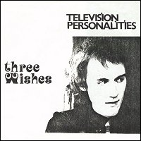
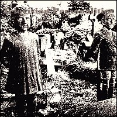

Television Personalities |
 1982 - Whaam! - WHAAM 4 - 7" Songs: Three Wishes Geoffrey Ingram And Don't The Kids Just Love It
Producer: Adam Wyngarde, T. Leary and A. Warhol |
 1991 - Overground - OVER20 - 7" Songs: Three Wishes Geoffrey Ingram And Don't The Kids Just Love It
Overground Records 1991 |